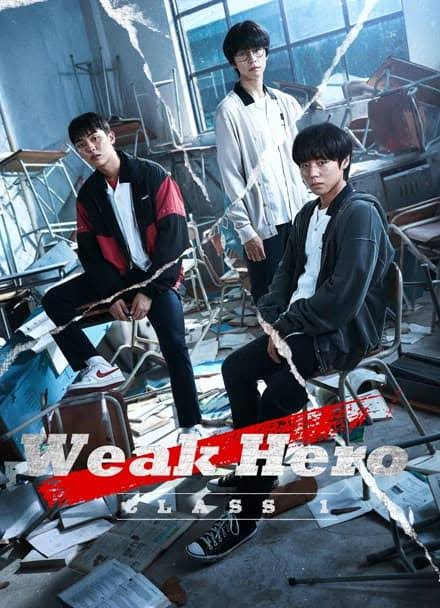
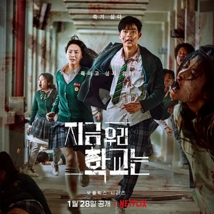
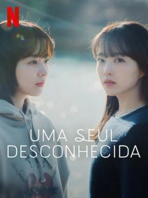
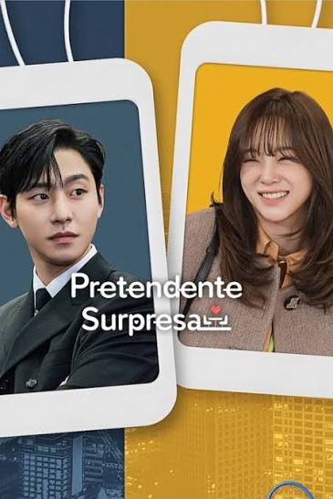
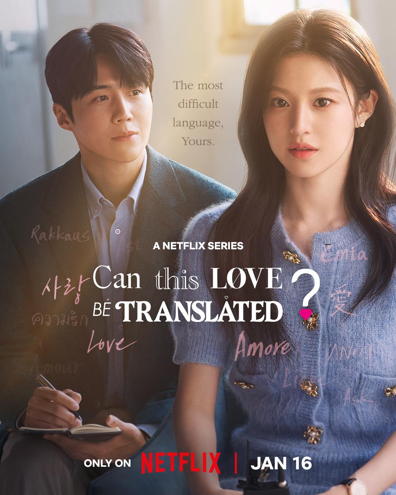
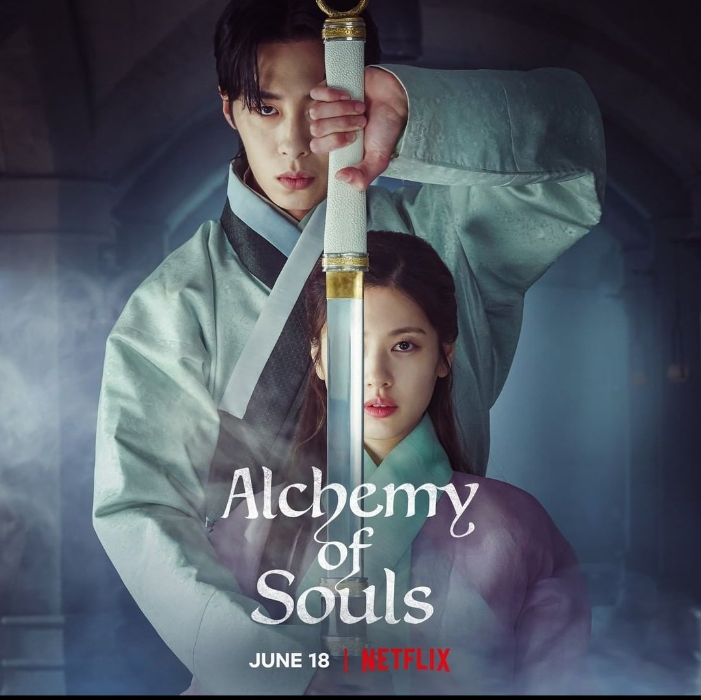
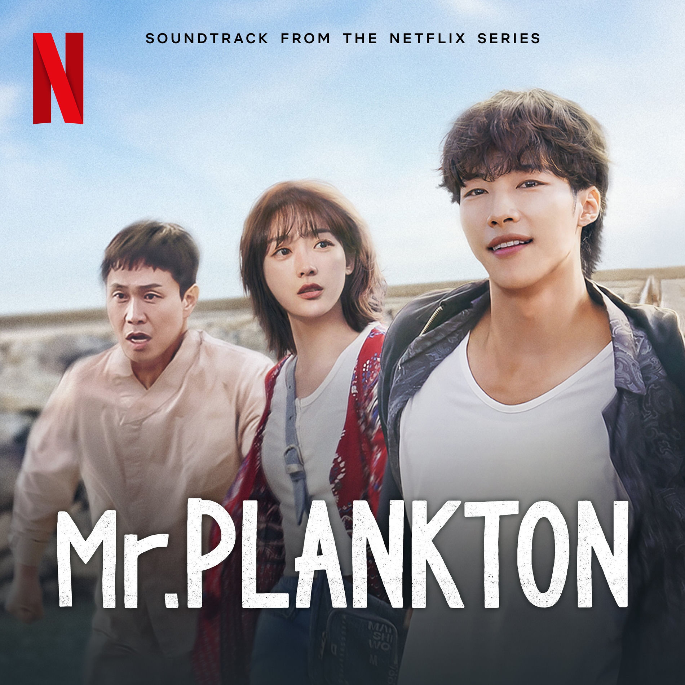
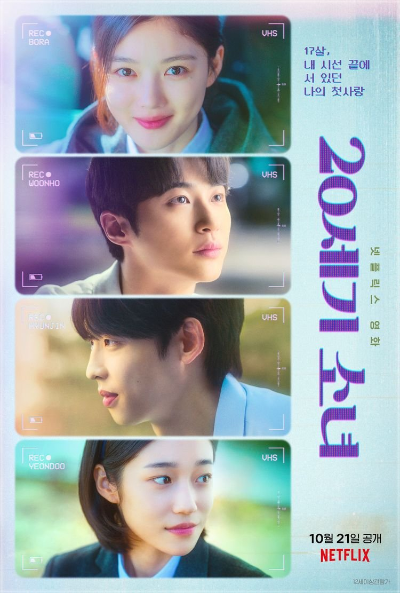

De ação muito viviante, quando eu assisti eu não conseguia parar de assistir.

Dorama de terror, de zumbi, incrivel melhor dorama de terror estou esperando a nova temporada logo

Eu gosto muito que é bem reflexivo mostra a visão de duas meninas que são irmãs gemeas uma que sofreu de depressão e a outra que sofreu assedio no trabalho(muito bom pra repertório de redação)

Classico do CEO e da menina pobre, o primeiro dorama de todos que começam a assistir

Tem uma cinematografia incrivel e eu sou muito fã da atriz que faz a personagem principal, parece ser só um romance simples mas quando voce vai assistir acontecem coisas muito mais chocantes super recomendo!

É um dorama mais mistico e diferente eu gosto muito dele as duas temporadas são incriveis

Muito bom, esse dorama é de romance, triste mas ao mesmo tempo engraçado o ruim é que voce ja começa assistindo sabendo oque vai acontecer no final, é um dorama bem reflexivo até o nome tem um história por trás

incrivel, é muito triste já assisti 5 vezes seguidas e nas 5 vezes eu chorei de tão triste que é, mas é mto bom, é um romace bem clichezinho.

Sem palavras de tão bom que é!, aborda de tudo e mais um pouco não é apenas romance, ele traz ensinamentos pra vida, esse dorama é muito reflexivo (é muito bom pra repertório de redação)

Maravilhoso, eu amo tem ação tem tristeza só não tem romance mas mesmo assim é mto bom, é incrivel eu adoro esse dorama melhor dorama de todos os tempos